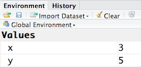
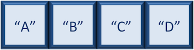
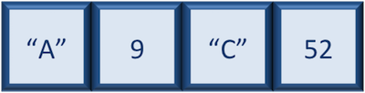
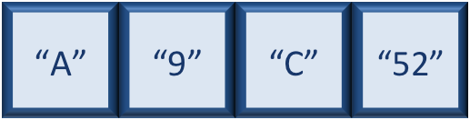

Lesson 2: R Objects and Data Types
Learning Objectives
- Create and manipulate R objects
- Identify common R object types and classes
- Use the assignment operator <- to assign values to objects
- Install and load R packages
R Objects
Objects and functions are the building blocks of R programming.
When we create something in R and give it a name, we are creating an object. Objects store information that we can use, modify, and analyze. Functions are also objects in R, but they are a special type of object that contains instructions for performing an action.
For example:
x <- 3
Here, we create an object named x and assign the value 3 to it.
R objects have a type and a class, which describe what kind of information they contain and how R should handle them. More on this later.
The "Parts of Speech" of R
When writing R code, you will encounter several basic components:
- Comments — begin with
#and are used to document your code - Objects — named containers for values or other information
- Functions — instructions that perform actions
- Assignment operator —
<-used to assign a value to an object
These components work together to create R code.
In the example above, we created an object or a 'bucket' called x. Inside we put a value, 3.
Let's create another object called y and give it a value of 5.
y <- 5
When assigning a value to an object, R does not print anything to the console. You can force to print the value by using parentheses or by typing the R object name.
y
You can also view information on the variable by looking in your Environment window in the upper right-hand corner of the RStudio interface.

Now we can reference these buckets by name to perform mathematical operations on the values contained within. What do you get in the console for the following operation:
x + y
Try assigning the results of this operation to another object called number.
number <- x + y
Class Exercise
-
Try changing the value of
xto 5. What happens tonumber? -
Now try changing the value of
yto contain the value 10. What do you need to do, to updatenumber?
Naming conventions
R objects can be given almost any name, such as x, current_temperature, or subject_id. However, there are some rules / suggestions you should keep in mind:
- Make your names explicit and not too long.
- Avoid names starting with a number (
2xis not valid butx2is) or underscores_ - Avoid names of fundamental functions in R (e.g.,
if,else,for, see here for a complete list). - Avoid dots (
.) within a object name as inmy.dataset. There are many functions in R with dots in their names for historical reasons, but because dots have a special meaning in R (for methods) and other programming languages, it's best to avoid them. - Use nouns for object names and verbs for function names
- Keep in mind that R is case sensitive (e.g.,
genome_lengthis different fromGenome_length) - Be consistent with the styling of your code (where you put spaces, how you name variable, etc.). In R, two popular style guides are Hadley Wickham's style guide and Google's.
Data Types
R Objects can contain values of specific data types within R. The six data types that R uses include:
-
"numeric"for any numerical value, including whole numbers and decimals. This is the most common data type for performing mathematical operations. -
"character"for text values, denoted by using quotes ("") around value. For instance, while 5 is a numeric value, if you were to put quotation marks around it, it would turn into a character value, and you could no longer use it for mathematical operations. Single or double quotes both work, as long as the same type is used at the beginning and end of the character value. -
"integer"for whole numbers (e.g.,2L, theLindicates to R that it's an integer). It behaves similar to thenumericdata type for most tasks or functions; however, it takes up less storage space than numeric data, so often tools will output integers if the data is known to be comprised of whole numbers. Just know that integers behave similarly to numeric values. If you wanted to create your own, you could do so by providing the whole number, followed by an upper-case L. -
"logical"forTRUEandFALSE(the Boolean data type). Thelogicaldata type can be specified using four values,TRUEin all capital letters,FALSEin all capital letters, a single capitalTor a single capitalF. -
"complex"to represent complex numbers with real and imaginary parts (e.g.,1+4i) and that's all we're going to say about them -
"raw"that we won't discuss further
The table below provides examples of each of the commonly used data types:
| Data Type | Examples |
|---|---|
| Numeric: | 1, 1.5, 20, pi |
| Character: | “anytext”, “5”, “TRUE” |
| Logical: | TRUE, FALSE, T, F |
The type of data will determine what you can do with it. For example, if you want to perform mathematical operations, then your data type cannot be character or logical. Whereas if you want to search for a word or pattern in your data, then you data should be of the character data type. The task or function being performed on the data will determine what type of data can be used.
Data Structures
So far, our "buckets" have contained a single value.
number <- 3
But an object can contain multiple values such as:
numbers <- c(3, 5, 7, 9)
Here numbers contains four values organized together in a vector. R provides several different data structures for organizing collections of values. The data structure you choose depends on how your data are organized and what you want to do with them.
These include:
- Vectors -
c() - Factors -
factor() - Matrices
matrix() - Data frames -
data.frame
Vectors
A vector is the most common and basic data structure in R, and is pretty much the workhorse of R. It's basically just a collection of values, mainly either numbers,

or characters,

or logical values,

Note that all values in a vector must be of the same data type. If you try to create a vector with more than a single data type, R will try to coerce it into a single data type.
For example, if you were to try to create the following vector:

R will coerce it into:

The analogy for a vector is that your bucket now has different compartments; these compartments in a vector are called elements.
Each element contains a single value, and there is no limit to how many elements you can have. A vector is assigned to a single variable, because regardless of how many elements it contains, in the end it is still a single entity (bucket).
Let's create a vector of genome lengths and assign it to a variable called glengths.
Each element of this vector contains a single numeric value, and three values will be combined together into a vector using c() (the combine function). All of the values are put within the parentheses and separated with a comma.
# Create a numeric vector and store the vector as a variable called 'glengths'
glengths <- c(4.6, 3000, 50000)
glengths
Note your environment shows the glengths variable is numeric (num) and tells you the glengths vector starts at element 1 and ends at element 3 (i.e. your vector contains 3 values) as denoted by the [1:3].
A vector can also contain characters. Create another vector called species with three elements, where each element corresponds with the genome sizes vector (in Mb).
# Create a character vector and store the vector as a variable called 'species'
species <- c("ecoli", "human", "corn")
species
What do you think would happen if we forgot to put quotations around one of the values? Let's test it out with corn.
# Forget to put quotes around corn
species <- c("ecoli", "human", corn)
Note that RStudio is quite helpful in color-coding the various data types. We can see that our numeric values are blue, the character values are green, and if we forget to surround corn with quotes, it's black. What does this mean? Let's try to run this code.
When we try to run this code we get an error specifying that object 'corn' is not found. What this means is that R is looking for an object or variable in my Environment called 'corn', and when it doesn't find it, it returns an error. If we had a character vector called 'corn' in our Environment, then it would combine the contents of the 'corn' vector with the values "ecoli" and "human".
Since we only want to add the value "corn" to our vector, we need to re-run the code with the quotation marks surrounding corn. A quick way to add quotes to both ends of a word in RStudio is to highlight the word, then press the quote key.
# Create a character vector and store the vector as a variable called 'species'
species <- c("ecoli", "human", "corn")
Class Exercise
Create a vector of numeric and character values by combining the two vectors that we just created (glengths and species). Assign this combined vector to a new variable called combined. Hint: you will need to use the combine c() function to do this.
Print the combined vector in the console, what looks different compared to the original vectors?
Inspecting Vectors
Lets create another vector of animal weights and assign it to a new object weight_g:
# Vectors(objects) and data types
weight_g <- c(50, 60, 65, 82) # use of combine function to assign a series of values to a vector
weight_g # this is a numerical vector
#lets create a character vector
molecules <- c("dna", "rna", "protein")
molecules
There are many functions that allow you to inspect the content of a vector.
class(weight_g) # class indicates type of element class the object is
class(molecules)
str(weight_g) #provides overview of the structure of an object
You can add other elements to your vector:
# addition of elements
weight_g <- c(weight_g, 90) # added value to the end of the vector
weight_g <- c(30, weight_g) # add to the beginning of the vector
Subsetting Vectors
If we want to extract one or several values from a vector, we must provide one or several indices in square brackets. For instance:
# Subsetting Vectors (by postion)
molecules <- c("dna", "rna", "peptides", "proteins")
molecules[2] # position 2
molecules[c(3,2)] # position 3 and 2, reordered
We can also repeat the indices to create an object with more elements than the original one:
more_molecules <- molecules[c(1, 2, 3, 2, 1, 4)]
more_molecules
molecules[-1] ## all but the first one
molecules[-c(1, 3)] ## all but 1st/3rd ones
molecules[c(-1, -3)] ## all but 1st/3rd ones
molecules <- c(molecules[1:2], "peptide", molecules[3])
R vectors don’t have an “insert” command to add something in the middle, we must rebuild the vector by combining the parts before and after the insertion point.
Subsetting is powerful because it means:
- You can reorder elements
- You can duplicate elements
- You can select any combination of positions
Conditional subsetting
Overall goal: Learn how to use logical conditions to select specific values from a vector based on a rule, rather than selecting them by their position.
So far, we've selected values from a vector using their positions (for example, the 1st or 3rd element). Conditional subsetting allows us to select values based on a rule instead.
# Conditional subsetting; selection of values based on a RULE
weight_g <- c(21, 34, 39, 54, 55)
We can use a logical vector (TRUE/FALSE) to determine which elements to keep.
# TRUE selects the element at the same position
# FALSE does not select the element
weight_g[c(TRUE, FALSE, TRUE, TRUE, FALSE)] # Use of logical vectors
The logical vector corresponds to the positions in weight_g, therefore R returns:
21 39 54
Now, we will use a "rule" instead of manually writing TRUE/FALSE. Instead of manually creating the logical vector, we can ask R to create it for us using a condition.
For example, suppose we want to select weights greater than 50:
weight_g[weight_g > 50] # select values above 50
# Is each value in `weight_g` greater than 50?
# Notice that just writing `weight_g > 50` is not enough
weight_g > 50
21 > 50 # FALSE
34 > 50 # FALSE
39 > 50 # FALSE
54 > 50 # TRUE
55 > 50 # TRUE
So the output created by R will be:
FALSE FALSE FALSE TRUE TRUE
That logical vector is then used to subset the original weight_g vector to result in a numerical output.
Why Does weight_g Appear Twice?
weight_g[weight_g > 50]
The two occurrences of weight_g have different jobs.
- The first
weight_gcan be interpreted as These are the values I want to select from. - The second
weight_gcan be interpreted as Use these values to determine which elements meet my rule.
We used the > comparison operator in the last example. Below is a table of full list of comparisons operators.
| Comparison Operator | Description |
|---|---|
| > | greater than |
| >= | greater than or equal to |
| < | less than |
| <= | less than or equal to |
| != | Not equal |
| == | equal |
| a | b |
| a & b | a and b |
weight_g[weight_g < 30 | weight_g > 50] # one of the conditions is true
weight_g[weight_g >= 30 & weight_g == 21]
This expression uses conditional subsetting to filter a vector based on multiple rules.
weight_g >= 30checks which values are 30 or greaterweight_g == 50checks which values are exactly 50&means both conditions must beTRUEat the same time
Membership testing with %in%
-
The
%in%is known as the membership operator. -
The function
%in%allows you to test if any of the elements of a search vector are found. This operator returnsTRUEfor any value that is in your vector and can be used for sub-setting. -
One can translate the code below as for each element in molecules, is it found anywhere in this other list?
# membership testing with %in%
# “For each element in molecules, is it found anywhere in this other list?”
molecules
molecules %in% c("rna", "dna", "metabolite", "peptide", "glycerol")
# Output = logical vector, same length as molecules
Names
Let's consider the following vector and try to name the individual entities using the name() function.
What is a function? Functions are “canned scripts” that automate more complicated sets of commands including operations assignments, etc. Many functions are predefined, or can be made available by importing R packages (more on that later). A function usually gets one or more inputs called arguments. Functions often (but not always) return a value.
?names tells us that in order to use this function it requires an assignment.
# Naming vectors; subsetting vectors by name
x <- c(1, 5, 3, 5, 10)
names(x) <- c("A", "B", "C", "D", "E")
names(x) ## now we have names
When a vector has names, it is possible to access elements by their name, in addition to their index.
x[c(1,3)] # This says, "Give me the 1st and 3rd element of x"
x[c("A", "C")] # This says, Give me the elements named "A" and "C"
Tip
If a vector has a name, you can think of it like a dictionary: you can look things up by position or by its name.
Missing Data aka NA's
-
Let's transition, R was designed to analyze data.
-
There are a few ways to deal with NAs, the ones we will discuss are
na.rm,is.na(), andna.omit()
# Dealing with Missing Data - NA's
## Option 1: na.rm - Ignore NAs during a calculation
heights <- c(2, 4, 4, NA, 6)
mean(heights)
mean(heights, na.rm = TRUE)
## Option 2: is.na() - Identify missing values
is.na(heights) #Asks a yes/no for each value
# So at this point, nothing has been removed
#R is just identifying which values are missing.
!is.na(heights) # the ! means NOT; flips logical
heights[!is.na(heights)]
#The square brackets [] are used for subsetting
#R keeps only the elements where the condition is TRUE
is.na() finds the missing values, ! flips the logic, and the brackets keep only the values that are not missing.
## Option 3: na.omit() - permanently removes rows that contain NAs
na.omit(heights)
# Returns a new object with NAs removed
# Works on vectors, data frames, and matrices
# For data frames: removes entire rows with any NA
Citation
To cite material from this course in your publications, please use:
Some materials used in these lessons were derived from work that is Copyright © Data Carpentry (http://datacarpentry.org/). All Data Carpentry instructional material is made available under the Creative Commons Attribution license (CC BY 4.0).
Other materials were derived from Babraham Bioinformatics - Training Courses. (n.d.). https://www.bioinformatics.babraham.ac.uk/training.html
NIH Bioinformatics Training and Education Program. "Introductory R for Novices". Last updated January 2026. https://bioinformatics.ccr.cancer.gov/docs/r_for_novices/